ARMALikelihoodFactory¶
-
class
ARMALikelihoodFactory(*args)¶ Maximum likelihood estimator of a multivariate ARMA Gaussian process.
- Available constructors:
ARMALikelihoodFactory()
ARMALikelihoodFactory(p, q, d, invertible)
ARMALikelihoodFactory(indP, indQ, d, invertible)
Parameters: - p : int
Order of the AR part of the 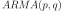 process of dimension
 .
.- q : int
Order of the MA part of the process of dimension
.- d : int,
Dimension of the process.
- invertible : bool, optional
Restrict the estimation to invertible ARMA processes.
By default: True.
- indP :
Indices All the 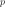 orders that will be investigated. Care: not yet implemented.
- indQ :
Indices All the orders that will be investigated. Care: not yet implemented.
Notes
We suppose here that the white noise is normal with zero mean and covariance matrix 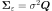 where 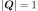. It implies that the ARMA process estimated is normal.
Let 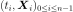 be a multivariate time series of dimension
from an process.If we note 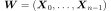, then
 is normal with zero mean. Its covariance matrix writes which depends on the coefficients 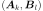 for
is normal with zero mean. Its covariance matrix writes which depends on the coefficients 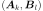 for  and
and  and on the matrix 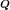.
and on the matrix 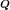.The likelihood of
writes :where 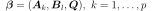,
and where  denotes the determinant.
denotes the determinant.No evaluation of selection criteria such as AIC or BIC is done.
Examples
Create a time series from a scalar ARMA(4,2) and a normal white noise:
>>> import openturns as ot >>> myTimeGrid = ot.RegularGrid(0.0, 0.1, 50) >>> myWhiteNoise = ot.WhiteNoise(ot.Triangular(-1.0, 0.0, 1.0), myTimeGrid) >>> myARCoef = ot.ARMACoefficients([0.4, 0.3, 0.2, 0.1]) >>> myMACoef = ot.ARMACoefficients([0.4, 0.3]) >>> myARMAProcess = ot.ARMA(myARCoef, myMACoef, myWhiteNoise) >>> myTimeSeries = myARMAProcess.getRealization()
Estimate the ARMA process with the maximum likelihood estimator:
>>> myFactory = ot.ARMALikelihoodFactory(4, 2, 1) >>> myARMA = myFactory.build(ot.TimeSeries(myTimeSeries))
Attributes: thisownThe membership flag
Methods
build(*args)Estimate the ARMA process. getClassName()Accessor to the object’s name. getCurrentP()Accessor to the current P order. getCurrentQ()Accessor to the current Q order. getId()Accessor to the object’s id. getInitialARCoefficients()Accessor to the initial AR coefficients. getInitialCovarianceMatrix()Accessor to the initial covariance matrix of the white noise. getInitialMACoefficients()Accessor to the initial MA coefficients. getInvertible()Accessor to the invertible constraint. getName()Accessor to the object’s name. getP()Accessor to the P orders. getQ()Accessor to the Q orders. getShadowedId()Accessor to the object’s shadowed id. getVerbose()Accessor to the verbose mode. getVisibility()Accessor to the object’s visibility state. hasName()Test if the object is named. hasVisibleName()Test if the object has a distinguishable name. setInitialARCoefficients(phi)Accessor to the initial AR coefficients. setInitialConditions(arCoefficients, …)Accessor to the initial AR coefficients. setInitialCovarianceMatrix(covarianceMatrix)Accessor to the initial covariance matrix of the white noise. setInitialMACoefficients(theta)Accessor to the initial MA coefficients. setInvertible(invertible)Accessor to the invertible constraint. setName(name)Accessor to the object’s name. setShadowedId(id)Accessor to the object’s shadowed id. setVerbose(verbose)Accessor to the verbose mode. setVisibility(visible)Accessor to the object’s visibility state. -
__init__(*args)¶ Initialize self. See help(type(self)) for accurate signature.
-
build(*args)¶ Estimate the ARMA process.
- Available usages:
build(myTimeSeries)
build(myProcessSample)
Parameters: - myTimeSeries :
TimeSeries One realization of the process.
- myProcessSample :
ProcessSample Several realizations of the process.
Returns: - myARMA :
ARMA The process estimated with the maximum likelihood estimator.
-
getClassName()¶ Accessor to the object’s name.
Returns: - class_name : str
The object class name (object.__class__.__name__).
-
getCurrentP()¶ Accessor to the current P order.
Returns: - p : int
Order of the AR part of the process of dimension
.
-
getCurrentQ()¶ Accessor to the current Q order.
Returns: - q : int
Order of the MA part of the process of dimension
.
-
getId()¶ Accessor to the object’s id.
Returns: - id : int
Internal unique identifier.
-
getInitialARCoefficients()¶ Accessor to the initial AR coefficients.
Returns: - initARCoeff :
ARMACoefficients The initial AR coefficients used for the optimization algorithm.
- initARCoeff :
-
getInitialCovarianceMatrix()¶ Accessor to the initial covariance matrix of the white noise.
Returns: - initCovMat :
CovarianceMatrix The initial covariance matrix of the white noise used for the optimization algorithm.
- initCovMat :
-
getInitialMACoefficients()¶ Accessor to the initial MA coefficients.
Returns: - initMACoeff :
ARMACoefficients The initial MA coefficients used for the optimization algorithm.
- initMACoeff :
-
getInvertible()¶ Accessor to the invertible constraint.
Returns: - invertible : bool
The initial AR coefficients used for the optimization algorithm.
-
getName()¶ Accessor to the object’s name.
Returns: - name : str
The name of the object.
-
getShadowedId()¶ Accessor to the object’s shadowed id.
Returns: - id : int
Internal unique identifier.
-
getVerbose()¶ Accessor to the verbose mode.
Returns: - verboseMode : bool
Get the verbose mode while both the exploration of the possible models and the optimization steps.
-
getVisibility()¶ Accessor to the object’s visibility state.
Returns: - visible : bool
Visibility flag.
-
hasName()¶ Test if the object is named.
Returns: - hasName : bool
True if the name is not empty.
-
hasVisibleName()¶ Test if the object has a distinguishable name.
Returns: - hasVisibleName : bool
True if the name is not empty and not the default one.
-
setInitialARCoefficients(phi)¶ Accessor to the initial AR coefficients.
Parameters: - initARCoeff :
ARMACoefficients The initial AR coefficients used for the optimization algorithm.
- initARCoeff :
-
setInitialConditions(arCoefficients, maCoefficients, covarianceMatrix)¶ Accessor to the initial AR coefficients.
Parameters: - initARCoeff :
ARMACoefficients The initial AR coefficients used for the optimization algorithm.
- initMACoeff :
ARMACoefficients The initial AR coefficients used for the optimization algorithm.
- initCovMatr :
CovarianceMatrix The initial covariance matrix of the white noise used for the optimization algorithm.
- initARCoeff :
-
setInitialCovarianceMatrix(covarianceMatrix)¶ Accessor to the initial covariance matrix of the white noise.
Parameters: - initCovMat :
CovarianceMatrix The initial covariance matrix of the white noise used for the optimization algorithm.
- initCovMat :
-
setInitialMACoefficients(theta)¶ Accessor to the initial MA coefficients.
Parameters: - initMACoeff :
ARMACoefficients The initial MA coefficients used for the optimization algorithm.
- initMACoeff :
-
setInvertible(invertible)¶ Accessor to the invertible constraint.
Parameters: - invertible : bool
The initial AR coefficients used for the optimization algorithm.
-
setName(name)¶ Accessor to the object’s name.
Parameters: - name : str
The name of the object.
-
setShadowedId(id)¶ Accessor to the object’s shadowed id.
Parameters: - id : int
Internal unique identifier.
-
setVerbose(verbose)¶ Accessor to the verbose mode.
Parameters: - verboseMode : bool
Set the verbose mode while both the exploration of the possible models and the optimization steps.
-
setVisibility(visible)¶ Accessor to the object’s visibility state.
Parameters: - visible : bool
Visibility flag.
-
thisown¶ The membership flag